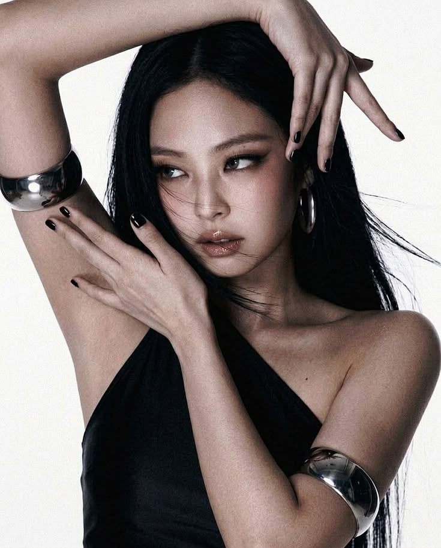

KIM JENNIE

Nome: Jennie Kim
Nome artístico: Jennie
Nascimento: 16 de janeiro de 1996
Idade: 30 anos
Jennie é conhecida por atuar como cantora, sendo main rapper do grupo.
Ela foi a primeira integrante do BLACKPINK a lançar uma música solo oficialmente. Em 2018, lançou “SOLO”, que se tornou um enorme sucesso e fez dela uma das primeiras integrantes do grupo a estabelecer uma carreira solo de grande destaque.
Em 2024, Jennie lançou seu single “Mantra” e continuou expandindo sua carreira internacional. Depois, lançou seu álbum solo Ruby, consolidando ainda mais sua carreira individual.
Em 2026, sua carreira continuou crescendo tendo 1 bilhão na musica One of the girls com o the weekend e Lily e com novos lançamentos, incluindo o EP Fallen Angel.
Jennie também possui números impressionantes no Spotify. Atualmente, ela está entre as artistas de K-pop com mais ouvintes mensais, com aproximadamente 50 milhões de ouvintes mensais em determinadas medições recentes.
fun fact: Rose ja teve o cabelo castanho e vermelho, mas agora mantem ele no loiro e é uma piada no fandom dizendo que antes da rose pintar o cabelo ela era a park chae-young e depois de pintar o cabelo de loiro a park chae-young saiu do grupo e entrou a Rose
ships: Jennie+Rose= Chaennie
Jisoo+Jennie= Jensoo
Jennie+Lisa= Jenlisa
Voltar